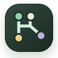

What is RAG?
Retrieve relevant material before generating an answer.
↳ local demo
Graph Chat LEARNING WORKSPACEStop forcing every follow-up into one chat. Branch from any concept, explore it in context, then reference multiple ideas to form a better question.
Retrieve relevant material before generating an answer.
↳ local demoMap text into semantic coordinates.
Find semantically similar content quickly.
Recombine branches into one complete mechanism.
Graph Chat saves more than messages. It preserves the useful relationships between questions.
Select a sentence or continue from the active node. The new exploration gets its own context without scattering the main thread.
Add two or more nodes to a joint question. Dotted edges record exactly which ideas powered the synthesis.
The Pi agent runs models and graph tools against explicit context, keeping every new insight traceable, reusable, and ready to continue.
From the first “I don't get it” to combining several concepts, every path stays on your own computer.
Parent paths, cross-branch references, and selected text are compiled separately, so the model receives only what this question needs.
Streaming, graph search, node reads, tool loops, retries, and cancellation are all managed by the Pi agent harness.
Pi includes OpenAI Codex device-code OAuth. No API key to copy, and tokens refresh automatically.
The SQLite database and OAuth credentials stay on your machine. No telemetry, account system, or required cloud service.
No microservice puzzle. One Bun or Node process serves the UI, graph API, SQLite database, and Pi runtime.
Clone the repository and run two commands. No account, external database, or API key required.
$ git clone https://github.com/everettjf/graphchat.git
$ cd graphchat && bun install && bun run dev